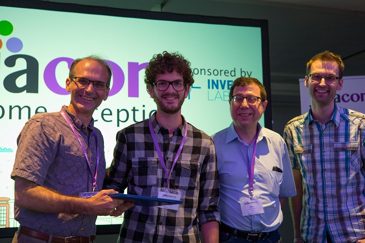
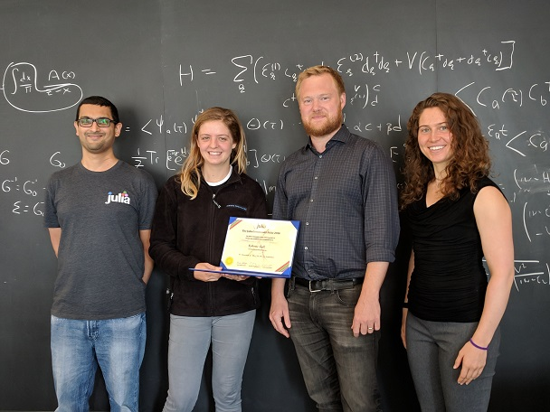
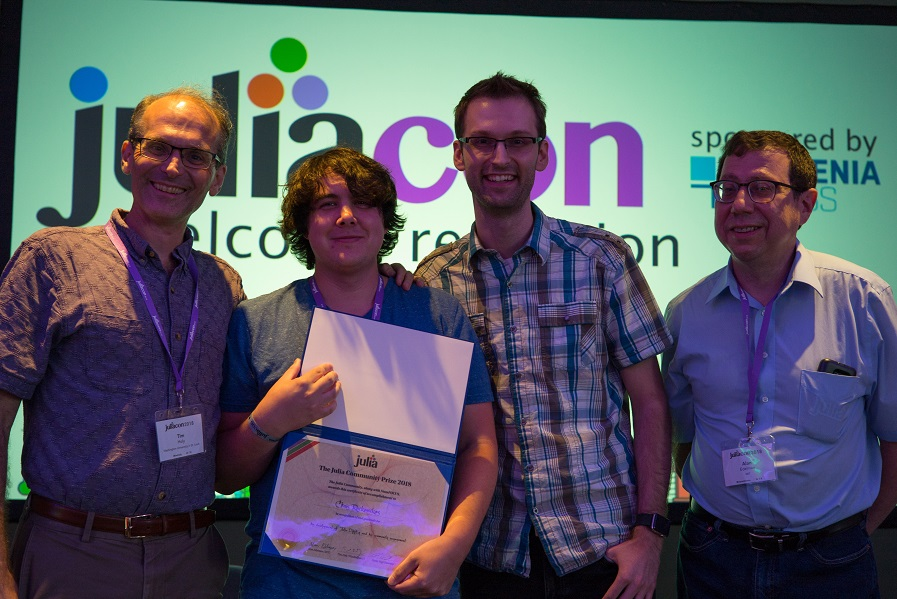
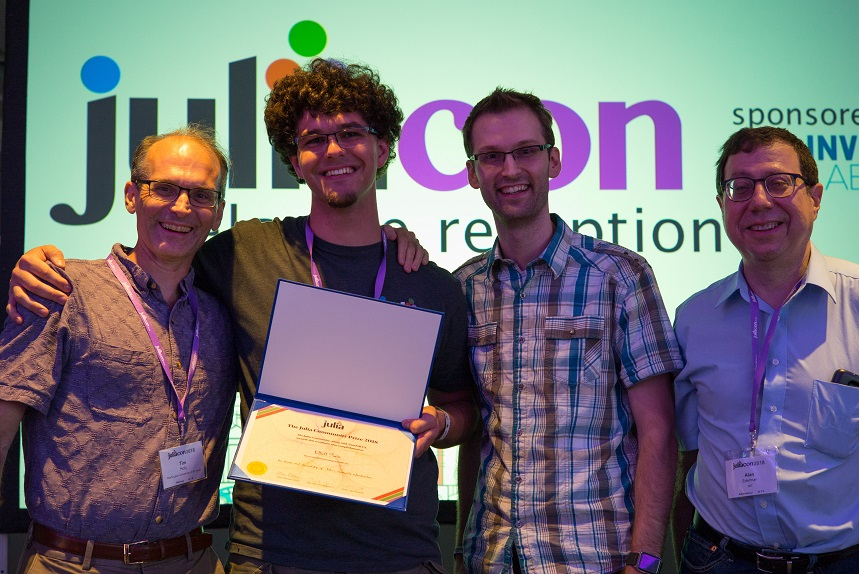

2018年Julia社区奖
Julia社区奖庆祝了一群科学家、开发人员和设计师并让他们聚在一起，为科学计算建立了一个强大而多样的生态系统。2018年获选的四位获奖者多年来都为Julia做出了巨大贡献，所有这些都是Julia成功的关键。
这些奖项是在伦敦的JuliaCon 2018上宣布的，每个获奖者都获得了获奖证书和1000美元的现金奖励。
获奖者：Tim Besard
贡献：将Julia本地扩展到GPU。 
获奖者：Katharine Hyatt
贡献：改进了Julia的测试套件和文档。 
获奖者：Chris Rackauckas
贡献：感谢他对JuliaDiffEq的发展和他参与社区发展所做的贡献。 
获奖者：Elliott Saba
贡献：感谢他为Julia社区的基础设施出谋划策。 
请加入我们，祝贺获奖者，并感谢奖项委员会。
奖项委员会
2018年委员会成员是麻省理工学院的 Alan Edelman 、WU 的 Prof Tim Holy 和 Invenia 的Mr Curtis Vogt。